Unidad 2 · Pensar espacialmente con PostGIS
De guardar coordenadas
a responder preguntas espaciales.
Comprende cómo una base de datos reconoce formas, relaciona lugares y construye nuevas geometrías.
Fundamentos → gestión de datos → análisis espacial → ejercicios originales.
Esta guía visual integra las tres clases de la unidad: introducción a PostGIS, gestión de datos y análisis espacial. Las ilustraciones son explicativas; la práctica al final corresponde exclusivamente al PDF original de MappingGIS.
1. Arquitectura y datos
Del archivo a PostGIS
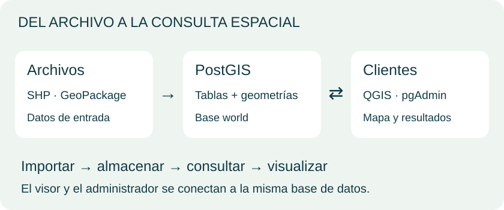
PostgreSQL administra tablas, transacciones, permisos y consultas. PostGIS es la extensión que añade capacidades espaciales. Una base centralizada ayuda a trabajar con varias personas y a consultar grandes conjuntos sin intercambiar copias de archivos; requiere administración y un modelo de datos adecuado.
| Papel | Herramienta | Qué hace en esta unidad |
|---|---|---|
| Motor de datos | PostgreSQL + PostGIS | Almacenar, consultar y procesar geometrías |
| Administración y SQL | pgAdmin / psql | Gestionar objetos y ejecutar consultas |
| Cliente cartográfico | QGIS | Conectar, importar, exportar y visualizar capas |
| Publicación web, más adelante | GeoServer → visor | Llevar las capas al navegador |
Referencia: PostGIS · índices espaciales.
2. Geometrías y formatos
De una fila a una entidad
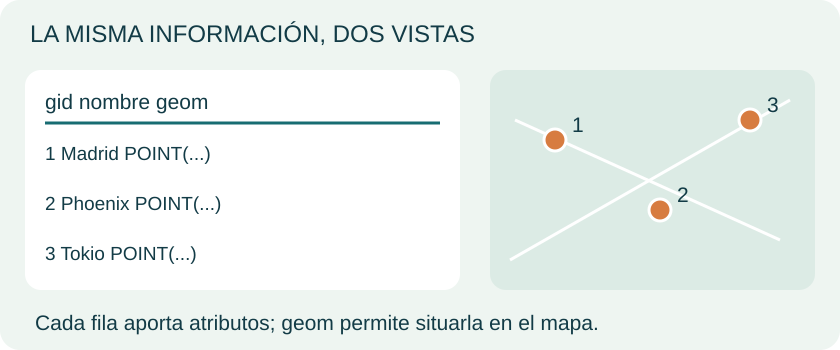
| Atributo | Ejemplo de la tabla lugares del curso |
|---|---|
| Identificador | gid |
| Información descriptiva | nombre, comentario, año |
| Geometría | geom geometry(Point, 4326) |
Point limita el tipo de forma y 4326 identifica el sistema de referencia. Las variantes MULTI* agrupan varias geometrías del mismo tipo; GEOMETRYCOLLECTION admite tipos distintos. Un polígono puede tener un anillo exterior y anillos interiores. Z añade una coordenada adicional, habitualmente altura; M representa una medida. La presencia de Z no significa que toda función opere en 3D.
WKT, WKB y conversiones
POINT(-3.683352 40.400026)Representación legible.
ST_GeomFromText(..., 4326)Objeto sobre el que se opera.
ST_AsText(geom)Coordenadas legibles otra vez.
| Representación | Entrada | Salida | Para qué sirve |
|---|---|---|---|
| WKT | ST_GeomFromText |
ST_AsText |
Inspeccionar geometrías como texto |
| WKB | ST_GeomFromWKB |
ST_AsBinary |
Intercambiar representación binaria |
| EWKT / EWKB | ST_GeomFromEWKT / ST_GeomFromEWKB |
ST_AsEWKT / ST_AsEWKB |
Incluir SRID y extensiones de PostGIS |
| GeoJSON | ST_GeomFromGeoJSON |
ST_AsGeoJSON |
Intercambio con aplicaciones web |
| GML / KML | ST_GeomFromGML / ST_GeomFromKML |
ST_AsGML / ST_AsKML |
Intercambio con herramientas compatibles |
| SVG | — | ST_AsSVG |
Representación gráfica |
Precisión respecto de los apuntes históricos: WKT y WKB tienen variantes que admiten dimensiones adicionales; no conviene afirmar que todos sus usos se limitan a 2D. El WKT convencional no incorpora por sí solo el SRID; EWKT puede expresarlo como SRID=4326;POINT(...).
3. Coordenadas y medidas
SRID: asignar o transformar
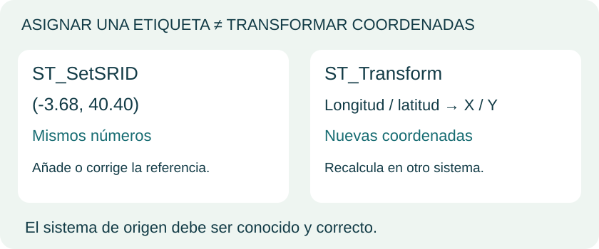
| Operación | Qué cambia | Uso correcto |
|---|---|---|
ST_SetSRID(geom, srid) |
La etiqueta del sistema; conserva coordenadas | Asignar el sistema conocido de coordenadas sin etiquetar |
ST_Transform(geom, srid) |
Recalcula coordenadas al sistema destino | Reproyectar desde un sistema correctamente identificado |
ST_SRID(geom) |
No modifica; informa el identificador | Revisar el contexto antes de operar |
Geometry frente a geography
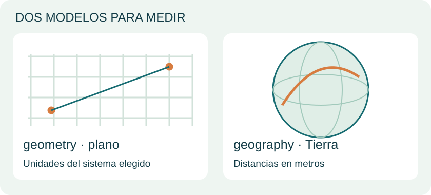
geometry |
geography |
|
|---|---|---|
| Modelo habitual de cálculo | Plano cartesiano | Superficie terrestre, con cálculos geodésicos |
| Distancias | Unidades del sistema de coordenadas | Metros en las funciones de distancia |
| Ejemplo en EPSG:4326 | Coordenadas angulares; una distancia plana no está en metros | Distancias geodésicas entre ubicaciones |
| Decisión | Elegir una proyección apropiada para el área y la tarea | Útil para cálculos geográficos, especialmente áreas extensas |
No basta con que un sistema use metros para que cualquier medida sea adecuada: también importa la distorsión. En el ejercicio original se solicita un buffer de 2 grados sobre cities; se conserva esa consigna, que no equivale a un radio constante en kilómetros.
Metadatos que encontrarás: spatial_ref_sys describe sistemas de referencia; geometry_columns y geography_columns permiten inspeccionar columnas espaciales. ST_GeometryType, ST_NDims y ST_SRID describen una geometría. Los estándares Simple Features y SQL/MM aportan tipos y operaciones comunes; no todas las extensiones de PostGIS pertenecen al mismo estándar.
Referencia: PostGIS · ST_SetSRID · PostGIS · ST_Transform · PostGIS · ST_DWithin.
4. Índices espaciales
Cajas y comprobación exacta
Una caja delimitadora simplifica la extensión de una geometría. El índice puede descartar muchos registros con rapidez, pero los candidatos pueden necesitar una comprobación exacta. El planificador decide si utilizar el índice según la consulta y los datos.
ST_Intersects y ST_DWithin pueden aprovechar índices compatibles. ST_Distance calcula una distancia; para filtrar por radio suele resultar apropiado ST_DWithin. Es una explicación del mecanismo, no una promesa de un tiempo fijo de ejecución.
Referencia: PostGIS · índices espaciales.
5. Flujo de una consulta SQL
Tabla → filtro → resultado
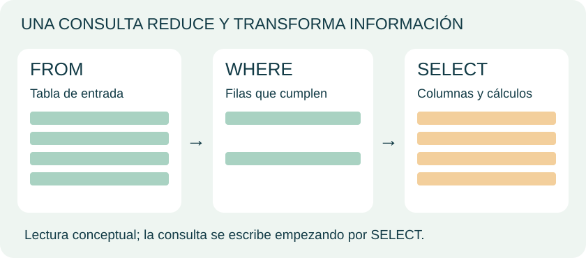
Es una ayuda para comprender la consulta; el orden escrito habitual comienza por SELECT y el motor puede optimizar la ejecución. GROUP BY reúne grupos para agregaciones como sum, avg o stddev; ORDER BY ordena el resultado. CREATE TABLE, INSERT, UPDATE y DELETE crean y modifican datos.
En el curso se crea la base world, se activa la extensión, se importan capas, se conecta QGIS y se trabaja con lugares, countries y cities.
La preparación se desarrolla en Conectar y crear la base world: primero crea o selecciona world y después activa PostGIS en esa base. Continúa con la importación y las consultas sobre las tablas originales siguiendo las secciones 9–11.
6. Funciones y resultados
Booleano, número o geometría
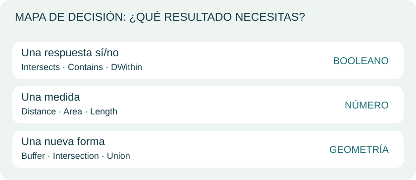
| Quiero… | Familia | Funciones de las clases |
|---|---|---|
| Leer o convertir una representación | Conversión | ST_AsText, ST_GeomFromText, ST_AsGeoJSON |
| Inspeccionar forma y medidas | Recuperación | ST_Length, ST_Area, ST_Perimeter, ST_X, ST_Y |
| Preguntar por una relación | Comparación | ST_Intersects, ST_Contains, ST_Touches, ST_DWithin |
| Construir una forma nueva | Generación | ST_Buffer, ST_Centroid, ST_Intersection, ST_Union |
| Gestionar columnas espaciales | Administración | AddGeometryColumn, Populate_Geometry_Columns |
Otros accesores del material: ST_ExteriorRing, ST_InteriorRingN, ST_GeometryN, ST_NumGeometries, ST_NPoints, ST_NRings, ST_StartPoint y ST_EndPoint. Comprueba el tipo de geometría que admite cada función; por ejemplo, ST_ExteriorRing trabaja con polígonos, no directamente con multipolígonos.
7. Relaciones espaciales
Galería de relaciones
Los esquemas muestran relaciones entre superficies; las definiciones también consideran interiores, fronteras y dimensiones.
| Función | Qué pregunta |
|---|---|
ST_Equals(A,B) |
¿Representan el mismo conjunto de puntos? No exige idéntico orden de vértices. |
ST_Intersects(A,B) |
¿Comparten algún punto, incluso de frontera? |
ST_Disjoint(A,B) |
¿No comparten ningún punto? |
ST_Touches(A,B) |
¿Comparten puntos sin que sus interiores se intersecten? |
ST_Within(A,B) / ST_Contains(B,A) |
¿A está dentro de B, con intersección de interiores? |
ST_Overlaps(A,B) |
¿Son de la misma dimensión, comparten parte y ninguna contiene a la otra? |
ST_Crosses(A,B) |
¿Se cruzan según la dimensión y los interiores de los tipos comparados? |
ST_DWithin(A,B,d) |
¿Están a una distancia menor o igual a d? |
ST_Distance(A,B) |
¿Cuál es la distancia mínima? Devuelve un número. |
La frontera importa: un punto situado solo sobre el borde de un polígono puede intersectarlo sin estar contenido según ST_Contains. ST_Intersects devuelve un booleano; ST_Intersection devuelve una geometría.
Referencia: PostGIS · ST_DWithin.
8. Operaciones geométricas
Buffer: punto y línea
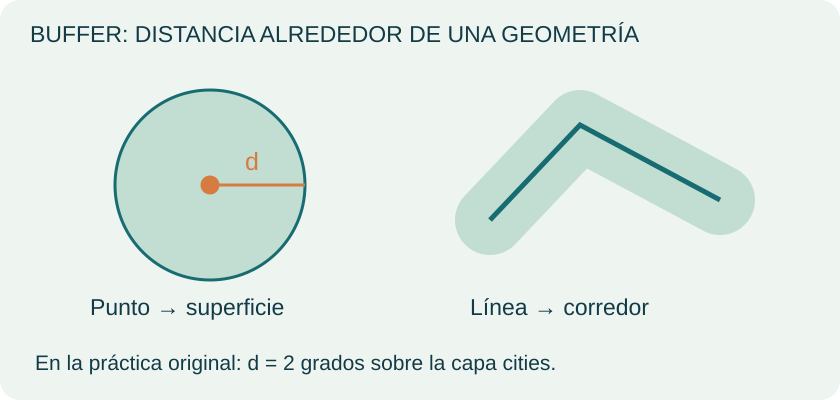
Intersección y unión
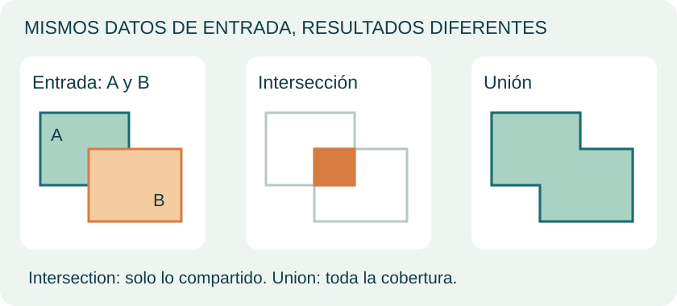
ST_BufferLa distancia debe interpretarse según el tipo y el sistema de referencia.
ST_IntersectionProduce el resultado del recorte, no una respuesta verdadero/falso.
ST_UnionTambién se utiliza como agregado sobre varias filas.
Centroide y punto interior
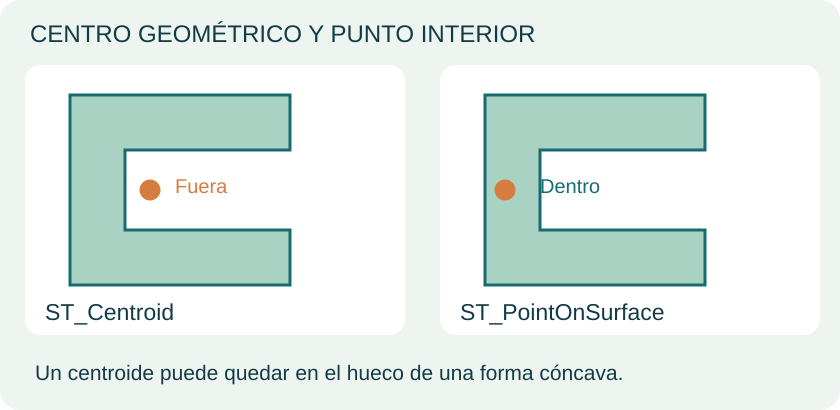
| Centroide | Punto sobre la superficie |
|---|---|
ST_Centroid calcula un centro geométrico |
ST_PointOnSurface busca un punto interior para superficies |
| Puede quedar fuera de un polígono cóncavo | Es útil cuando importa que el punto quede dentro |
Las consultas de la clase utilizan ejemplos de Nueva York para explicar relaciones y construcción. La práctica entregable de esta unidad utiliza las capas y ciudades indicadas en su PDF; se conserva esa distinción.
Antes de comenzar
| Necesitas | Cómo saber si está listo |
|---|---|
| PostgreSQL con PostGIS y pgAdmin 4 | Puedes conectarte al servidor y ejecutar SELECT version(); |
| QGIS con el Administrador de bases de datos | Encuentras el menú Base de datos → Administrador de BBDD |
El paquete webmapping.zip del curso |
Tienes la carpeta Capas con países, lugares poblados y ne_110_rivers_lake.gpkg |
| Una carpeta para guardar resultados | Puedes guardar capturas y archivos exportados |
Disponibilidad de datos. El paquete webmapping.zip se obtiene desde la plataforma del curso. En tu carpeta de trabajo el paquete se llama Unidad_2/Archivos_webmapping.zip y también está extraído en Unidad_2/Archivos_curso_webmapping. Copia su contenido a la ruta de práctica si lo necesitas. El sitio publicado no incluye ese paquete: los PDF por sí solos no contienen las capas. Si no lo conservas, debes recuperarlo antes de realizar las importaciones y los ejercicios que dependen de él. La creación de lugares y sus tres registros escritos en SQL funciona sin ese paquete, una vez activado PostGIS; las consultas sobre las capas importadas requieren los archivos del curso.
Versiones y nombres de menú. El curso utiliza PostgreSQL 17 y PostGIS 3.5. Las rutas siguientes describen ese flujo en Windows; los nombres de algunos botones pueden variar con la versión o el idioma. Anota tus versiones para poder interpretar diferencias.
Preparación de la práctica
Preparar los archivos
- Descarga
webmapping.zipdesde tu cuenta del curso y extrae todo su contenido en una ruta sin espacios, por ejemploC:\webmapping. - Abre
C:\webmapping\Capas. Localizane_110m_admin_0_countries.shp,ne_110m_populated_places.shpyne_110_rivers_lake.gpkg. - Mantén cada shapefile junto a sus archivos auxiliares:
.dbfcontiene atributos,.shxel índice y.prjla referencia espacial. No copies solamente el.shp. - Guarda una captura de la carpeta para el ejercicio 1. Si conservas la plantilla de resultados del curso, úsala; para estudio personal puedes guardar capturas numeradas en tu carpeta de resultados.
Instalar y abrir las herramientas
- Si ya tienes PostgreSQL y PostGIS operativos, pasa a la conexión. Si no, descarga el instalador desde PostgreSQL para Windows.
- En el instalador incluye PostgreSQL Server, pgAdmin 4, Command Line Tools y Stack Builder. Conserva las rutas predeterminadas y anota el puerto; el habitual es
5432. Define y guarda tu propia contraseña del usuariopostgres. - Abre Stack Builder, selecciona la instalación y el puerto anteriores y busca Spatial Extensions → PostGIS. Instala la edición compatible con esa instalación de PostgreSQL. El curso muestra PostgreSQL 17 con PostGIS 3.5; no mezcles paquetes de distintas versiones mayores de PostgreSQL.
- Abre pgAdmin 4 desde Inicio. Su interfaz puede abrirse en una ventana de escritorio o en el navegador. Esta es la aplicación que debes capturar en el ejercicio 2.
- Abre QGIS. Si falta el Administrador de BBDD, revisa Complementos → Administrar e instalar complementos y activa DB Manager / Administrador de BBDD.
Comprueba: PostgreSQL debe estar ejecutándose como servicio de Windows. Abrir pgAdmin no inicia por sí solo un servidor detenido.
Referencias: PostGIS · instalación en Windows · QGIS · Administrador de BBDD. Secuencia adaptada a la práctica original de MappingGIS.
9. Conectar y crear la base world
Registrar el servidor en pgAdmin
- En el árbol de pgAdmin despliega Servers / Servidores. Si ya aparece tu PostgreSQL local, abre esa conexión.
- Si no aparece, pulsa el botón derecho en Servers → Register → Server. En versiones anteriores puede llamarse Create → Server.
- En General, escribe un nombre identificativo, por ejemplo
PostgreSQL local. En Connection, utiliza estos valores:
| Parámetro | Valor |
|---|---|
| Host name/address | localhost |
| Port | 5432, o el que anotaste al instalar |
| Maintenance database | postgres |
| Username | postgres |
| Password | Tu contraseña de instalación |
- Guarda la conexión. Debe desplegarse el nodo Databases. La contraseña maestra de pgAdmin, si la solicita, protege sus contraseñas guardadas; es distinta de la contraseña del servidor.
Crear world y activar PostGIS
- Pulsa el botón derecho en Databases → Create → Database.
- Escribe
worldcomo nombre y dejapostgrescomo propietario. Guarda. Siworldya existe por una práctica previa, úsala y revisa sus tablas antes de crear o importar objetos. - Selecciona world y abre Tools → Query Tool, o su opción en el menú contextual. Confirma en la conexión del editor que estás en
world. - Pega y ejecuta este bloque con el botón Execute:
CREATE EXTENSION IF NOT EXISTS postgis;
SELECT current_database() AS base, postgis_full_version() AS version_postgis;
Resultado esperado: una fila cuyo campo base sea world y cuyo segundo campo contenga la versión de PostGIS. Si devuelve otra base, cambia la conexión antes de continuar. La extensión se activa en cada base, no una sola vez para todo el servidor.
Ejecutar y leer consultas
Pega un bloque cada vez. Si seleccionas texto, comprueba qué sentencia ejecuta el botón de tu versión; evita dejar seleccionada una consulta anterior. Los SELECT devuelven filas en Data Output; las operaciones de creación y modificación informan en Messages. El árbol de objetos puede necesitar Refresh / Actualizar después de crear una tabla.
Debes ver: una columna comprobacion con el valor 5. Este pequeño control separa los problemas de conexión de los problemas de datos.
Referencia: pgAdmin · editor de consultas y paneles de resultados.
10. Importar, visualizar y exportar
Dos shapefiles con el importador de PostGIS
La práctica original pide importar dos tablas con la interfaz de PostGIS y una tercera desde QGIS. Sigue las dos rutas para conservar esa distinción.
- En Inicio busca PostGIS Shapefile and DBF Loader / Shapefile Import/Export Manager de tu instalación.
- Abre View connection details y configura
localhost, tu puerto, la baseworld, el usuariopostgresy tu contraseña. Acepta y comprueba la conexión. - En la pestaña Import, pulsa Add File y abre
ne_110m_populated_places.shpdesdeCapas. - Configura la tabla de destino como
cities, esquemapublic, columna geométricageom, modo Create y SRID4326, tras comprobar que el.prjidentifica WGS 84. En Options, la práctica usaLATIN1, carga con COPY y deja desmarcada la opción Load into GEOGRAPHY column. - Pulsa Import y revisa el mensaje final. Repite con
ne_110m_admin_0_countries.shp, nombrando la tablacountriesy conservando los demás parámetros. - Actualiza world → Schemas → public → Tables en pgAdmin. Deben aparecer
citiesycountries.
Si el importador no está disponible: puedes cargar esas capas con el procedimiento de QGIS que sigue. Obtendrás tablas para continuar, aunque la captura del ejercicio 4 ya no acreditará las dos vías originales. Si el importador no arranca por dependencias, comprueba que utilizas el instalado junto a tu PostgreSQL; el PDF original también describe añadir su carpeta bin al PATH.
Conectar QGIS a world
- En QGIS abre el panel Navegador; si no está visible, actívalo desde Ver → Paneles → Navegador.
- Pulsa el botón derecho en PostgreSQL → Nueva conexión. Nómbrala
world local. - Indica host
localhost, puerto de tu instalación y baseworld. Introduce el usuario y la contraseña mediante el mecanismo de autenticación de QGIS. - Pulsa Probar conexión. Guarda cuando la prueba sea correcta.
- Despliega la conexión y el esquema
public. Arrastracountriesycitiesal lienzo.
Comprueba: debes ver polígonos de países y puntos de ciudades. Abre sus tablas de atributos y confirma que contienen registros. Esta conexión es la que documentarás en el ejercicio 3.
Importar rivers desde QGIS
- Añade
ne_110_rivers_lake.gpkga QGIS arrastrándolo al lienzo. Si contiene varias capas, selecciona la capa de datos correspondiente. - Abre Base de datos → Administrador de BBDD. Conecta a PostGIS → world local y selecciona el esquema
public. - Abre Importar capa/archivo. Escoge la capa de ríos como entrada, esquema
publicy tablarivers. Usa codificaciónUTF-8yidcomo clave primaria. Utilizageomcomo columna de geometría; elige o crea una clave primaria única según las opciones del importador. - Revisa el CRS de origen. Conserva
EPSG:4326como destino si es el sistema del paquete del curso; si el origen es otro, configura la transformación, sin cambiar solamente su etiqueta. - Activa la creación de índice espacial si está disponible e importa. No marques sobrescribir una tabla existente sin revisar si contiene trabajo previo.
- Actualiza la conexión. Debes tener
cities,countriesyrivers: guarda su captura para el ejercicio 4.
Comprobar nombres, geometrías y SRID
Ejecuta en pgAdmin, conectado a world:
SELECT f_table_schema, f_table_name, f_geometry_column, type, srid
FROM geometry_columns
WHERE f_table_schema = 'public'
ORDER BY f_table_name;
SELECT 'countries' AS tabla, count(*) AS filas FROM public.countries
UNION ALL
SELECT 'cities', count(*) FROM public.cities
UNION ALL
SELECT 'rivers', count(*) FROM public.rivers;
Resultado esperado: las tres tablas registradas, SRID 4326 para las capas del paquete y recuentos mayores que cero. La cantidad exacta de países o ciudades puede variar con la edición de los datos. Si aparecen otras columnas geométricas, utiliza sus nombres reales en las consultas siguientes o corrige la importación para seguir la nomenclatura del curso.
Exportar sin perder la tabla original
- En el Administrador de BBDD selecciona la tabla
cities, como indica la práctica original, y abre Tabla → Exportar a archivo. También puedes añadirla al mapa y usar Exportar → Guardar objetos como en su menú contextual. - Elige GeoJSON, una ruta de salida y
EPSG:4326. Guarda. - Repite con GeoPackage y un nombre distinto. Si el archivo ya existe, revisa si añadirás una capa o reemplazarás una existente.
- Abre ambos archivos en QGIS y compara su número de objetos con la tabla de origen. Guarda la captura de los dos archivos para el ejercicio 5.
Referencia: QGIS · importación, exportación y visualización de tablas. Nombres de capas y parámetros de carga: práctica original de MappingGIS, páginas 32–50.
11. SQL guiado con las tablas del curso
Trabaja en el editor de consultas de world, con countries, cities y rivers ya importadas. A continuación se prepara lugares con la estructura y los registros originales. Los ejemplos explican las herramientas que necesitarás; las actividades que debes resolver y documentar están al final.
Crear lugares y comprobar su estructura
Primero revisa si la tabla existe:
Si devuelve null, ejecuta el bloque de creación del curso. Si devuelve lugares, no la crees otra vez: revisa su estructura y sus datos antes de continuar.
CREATE TABLE public.lugares (
gid serial PRIMARY KEY,
nombre varchar(50),
comentario varchar(255),
"año" numeric,
geom geometry(Point, 4326)
);
gid identifica cada registro y se genera automáticamente; geom admite puntos en EPSG:4326. El campo año lleva comillas para conservar su nombre exacto.
SELECT f_table_name, f_geometry_column, type, srid
FROM geometry_columns
WHERE f_table_schema = 'public' AND f_table_name = 'lugares';
Comprueba: una fila para lugares, columna geom, tipo POINT y SRID 4326. Esta vista se actualiza a partir de la definición de la tabla; no debes insertar manualmente una fila de metadatos.
Insertar los tres lugares originales
Antes de insertar, ejecuta SELECT gid, nombre FROM public.lugares ORDER BY gid;. Si la tabla está vacía, incorpora los registros del curso:
INSERT INTO public.lugares (geom, nombre, comentario) VALUES
(ST_GeomFromText('POINT(-3.683352 40.400026)', 4326),
'Madrid', 'Capital de Espana'),
(ST_GeomFromText('POINT(-112.069992 33.53998)', 4326),
'Phoenix', 'Ciudad americana'),
(ST_GeomFromText('POINT(139.751407 35.685017)', 4326),
'Tokyo', 'Capital de Japon');
SELECT gid, nombre, comentario, ST_AsText(geom) AS coordenadas
FROM public.lugares
ORDER BY gid;
Comprueba: los tres nombres y sus puntos. Ejecuta las inserciones una sola vez: nombre no tiene una restricción de unicidad y repetir el bloque duplicaría ciudades con nuevos identificadores. Si ya hay datos, compáralos antes de insertar de nuevo.
Para verlos en el mapa, actualiza la conexión de QGIS, abre public y arrastra lugares al lienzo. También puedes consultar SELECT * FROM public.lugares; en pgAdmin y abrir su visor en la columna geométrica. Una salida convertida únicamente a WKT es texto, no una columna geométrica para ese visor.
Leer, filtrar y ordenar countries
SELECT name, type
FROM public.countries
WHERE type = 'Disputed'
ORDER BY name;
SELECT name, type
FROM public.countries
ORDER BY name
LIMIT 5;
La primera consulta reproduce el ejemplo de filtro del material original. WHERE limita las filas; ORDER BY ordena la salida. La segunda muestra hasta cinco países por nombre. La cantidad de países clasificados como Disputed depende de la edición de los datos: un resultado vacío no implica por sí solo un error de SQL.
Si no reconoces un campo, revisa la tabla de atributos en QGIS o consulta:
SELECT column_name, data_type
FROM information_schema.columns
WHERE table_schema = 'public' AND table_name = 'countries'
ORDER BY ordinal_position;
Resumir y agrupar
SELECT type, count(*) AS cantidad,
avg(char_length(name)) AS longitud_media_nombre
FROM public.countries
GROUP BY type
ORDER BY type;
Interpreta: cada fila corresponde a un tipo de país; count cuenta sus registros y avg promedia la longitud de sus nombres. Una columna que aparece junto a agregaciones debe estar agrupada o formar parte de una agregación. Para las tareas de población, revisa el campo pop_est: max obtiene un valor máximo, mientras que recuperar el nombre asociado requiere relacionar ese valor con las filas de origen.
Actualizar y eliminar sin perder el control
Las actividades 8 y 9 trabajan sobre los registros originales de lugares. Antes de ejecutar sus sentencias, consulta:
Compara los identificadores actuales con los que aparecen en las instrucciones originales. Una secuencia serial no vuelve a empezar al borrar una fila: si repetiste la práctica, gid = 3 puede no identificar la misma ciudad.
Para revisar una modificación antes de conservarla, puedes ejecutarla dentro de una transacción: escribe BEGIN;, ejecuta la sentencia del ejercicio y comprueba la tabla con SELECT. Después ejecuta una de estas opciones: COMMIT; para conservarla o ROLLBACK; para deshacerla. No ejecutes ambas. Si un error deja la transacción abortada, ejecuta ROLLBACK; antes de intentarlo otra vez.
UPDATE … SET … WHERE … cambia los registros seleccionados; DELETE FROM … WHERE … los elimina. Sin WHERE, afectan a todas las filas. En el ejercicio 8 también debes volver a insertar el lugar eliminado antes de continuar, tal como indica su contexto original.
Elegir la función y comprobar sus unidades
| Tarea sobre los datos originales | Herramienta que necesitas | Comprobación previa |
|---|---|---|
Leer coordenadas de lugares |
ST_AsText, ST_X, ST_Y |
El campo es un punto y conoces su SRID |
Medir límites de countries |
ST_Perimeter |
El sistema de referencia determina las unidades |
Medir entre dos ciudades de lugares en metros |
ST_Distance con valores geography |
Seleccionas una sola fila por ciudad y ambas tienen SRID correcto |
Generar puntos desde countries |
ST_Centroid |
El centroide puede quedar fuera del polígono |
Construir una zona alrededor de cities |
ST_Buffer |
La consigna original pide 2 grados, no metros |
Relacionar una ciudad con countries |
ST_Intersects |
Ambas geometrías están en el mismo sistema |
La conversión geom::geography permite que ST_Distance devuelva metros para estas geometrías WGS 84. Un cálculo directo sobre geometry en 4326 produce distancia plana en grados. Antes de combinar tablas, revisa sus nombres y atributos; los alias permiten distinguir dos referencias a una misma tabla.
Guardar y visualizar una geometría calculada
El patrón del curso es crear una tabla con identificador y columna geométrica → insertar el resultado de una consulta con INSERT … SELECT → abrir la tabla en QGIS. El tipo y el SRID de la columna de destino deben admitir las geometrías calculadas.
Consulta la distribución y el SRID de tus datos antes de aplicar ese patrón:
SELECT ST_SRID(geom) AS srid, ST_GeometryType(geom) AS tipo,
count(*) AS filas
FROM public.countries
GROUP BY ST_SRID(geom), ST_GeometryType(geom);
Comprueba: SRID 4326 y geometrías de países. Para ver una nueva tabla permanente, actualiza la conexión de QGIS y arrástrala al mapa junto con su capa de origen. Las actividades finales conservan las instrucciones originales para centroides, buffer y la relación espacial con Sao Paulo.
Fuentes: preparación de lugares y ejemplos sobre countries del ejercicio original de MappingGIS, páginas 56–64. Explicaciones complementarias: PostgreSQL · SQL, transacciones, PostGIS · ST_Distance y ST_Buffer.
12. Del procedimiento al ejercicio
Antes de resolver una actividad, identifica qué objetos necesita, qué transformación solicita y qué evidencia debes guardar. Los enunciados originales aparecen a continuación; esta tabla señala dónde prepararte.
| Ejercicios originales | Preparación en esta página | Qué debes poder comprobar |
|---|---|---|
| 1–2 · archivos y pgAdmin | Antes de comenzar | Datos extraídos y aplicación abierta |
| 3–5 · conexión, importación y exportación | Importar, visualizar y exportar | Tres tablas, capas visibles y dos archivos exportados |
| 6–9 · crear y editar lugares | SQL con las tablas del curso y contexto de cada actividad | Estructura, registros y modificaciones solicitadas |
| 10–11 · consultas sobre países | Filtrar, ordenar y resumir | Campos, condiciones y filas que solicita el enunciado |
| 12–14 · conversiones y medidas | Geometrías y formatos; coordenadas y medidas; ejemplos SQL | Formato de salida y unidades correctos |
| 15–17 · generación y relaciones | Operaciones geométricas; ejemplos SQL | Nuevas capas y comparación espacial solicitada |
Para las actividades sobre lugares: el bloque de creación y los tres registros originales están explicados en la sección SQL guiado y también conservados en el contexto de los ejercicios 6 y 7. Si ya los ejecutaste durante la preparación, no los repitas: revisa los resultados y documenta cada actividad antes de continuar con el 8 y el 9. Si ya habías insertado datos, consulta SELECT gid, nombre FROM lugares ORDER BY gid;: los identificadores no vuelven a empezar al borrar una fila y no debes suponer que coinciden con los de una instalación nueva.
Errores frecuentes y cómo resolverlos
| Qué observas | Qué revisar | Cómo comprobar la corrección |
|---|---|---|
| Connection refused | Servicio PostgreSQL iniciado, host y puerto de la instalación | Prueba la conexión en pgAdmin y QGIS |
| Password authentication failed | Usuario y contraseña del servidor, no la clave maestra de pgAdmin | Reconecta con las credenciales correctas |
| Extension postgis is not available | PostGIS instalado para esa versión de PostgreSQL | Activa la extensión en world y consulta su versión |
| Relation does not exist | Base activa, esquema y nombre exacto de la tabla | Consulta current_database() y actualiza public → Tables |
| Column does not exist | Nombres reales de atributos y geometría | Revisa la pestaña de columnas o la tabla de atributos |
| SRID 0 o SRID incompatibles | CRS real del archivo y parámetros de importación | Revisa geometry_columns; reimporta correctamente si es necesario |
| Medidas enormes o diminutas | geometry frente a geography, grados frente a metros |
Lee las unidades antes de interpretar el número |
| La capa no aparece | Recuento de filas, extensión del mapa y CRS | Acércate a la capa y abre su tabla de atributos |
| La tabla ya existe o hay claves duplicadas | Si ejecutaste de nuevo la creación o las inserciones | Inspecciona lo existente antes de repetir o modificar datos |
| Current transaction is aborted | Una sentencia anterior falló dentro de una transacción | Ejecuta ROLLBACK, corrige el error y repite el bloque |
Control antes de pasar a la unidad 3: conserva la base world, las capas importadas y los archivos originales. GeoServer utilizará ese trabajo más adelante. Guarda las consultas útiles en archivos .sql y registra las versiones empleadas.
13. Síntesis y referencias
Material y referencias
Base de la explicación: material del curso de MappingGIS. Síntesis e ilustraciones originales para estudio. Los ejercicios originales y sus paneles de contexto se conservan al final de esta página; el PDF queda como respaldo.
Ampliaciones técnicas contrastadas con la documentación oficial: índices espaciales, ST_DWithin y sus unidades, ST_SetSRID y ST_Transform. Para el resto de funciones, consulta el manual de PostGIS.
Ejercicio Unidad 2
Solo práctica original de MappingGIS. Los siguientes ejercicios conservan la numeración 1–17 del PDF Ejercicio_2_PostGIS_2025.pdf (69 páginas). Cada ejercicio incluye su enunciado original y un panel desplegable con el texto de las páginas de contexto. El PDF conserva las capturas y la maquetación de la clase.
Abrir el PDF original completo
Ejercicio 1 · Datos extraídos en un directorio sin espacios
Enunciado original: Haz una captura de pantalla como la de arriba con los datos extraídos en un directorio sin espacios.
Instrucciones y contexto del PDF original
Página 3 · texto original
Descarga de datos
Todos los datos y archivos necesarios para este curso se encuentran en el archivo
webmapping.zip que puedes descargar de la plataforma de formación.
Descomprime la carpeta en un directorio que no contenga espacios, para evitar
problemas. Lo ideal es en C:\webmapping\
Ejercicio nº1 . Haz una captura de pantalla como la de arriba con los datos
extraídos en un directorio sin espacios.
Los datos vectoriales que vamos a utilizar en el curso provienen de Natural Earth, a
escala 1:110m. Se trata de las capas de:
Ver página 3 del PDF original, con sus capturas
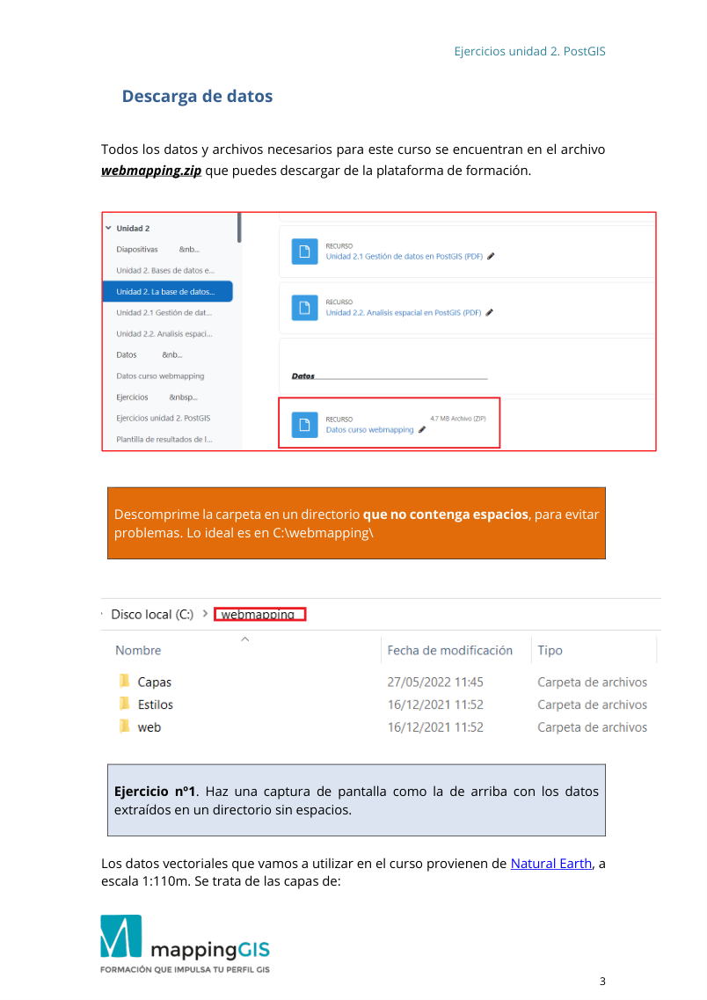
Ver las instrucciones originales · PDF, página 3
Ejercicio 2 · Abrir pgAdmin 4
Enunciado original: Desde el menú Inicio ve a programas > pgAdmin 4 y abre la aplicación pgAdmin 4. Haz una captura de pantalla de pgAdmin 4 abierto en el navegador.
Instrucciones y contexto del PDF original
Página 20 · texto original
Ver página 20 del PDF original, con sus capturas
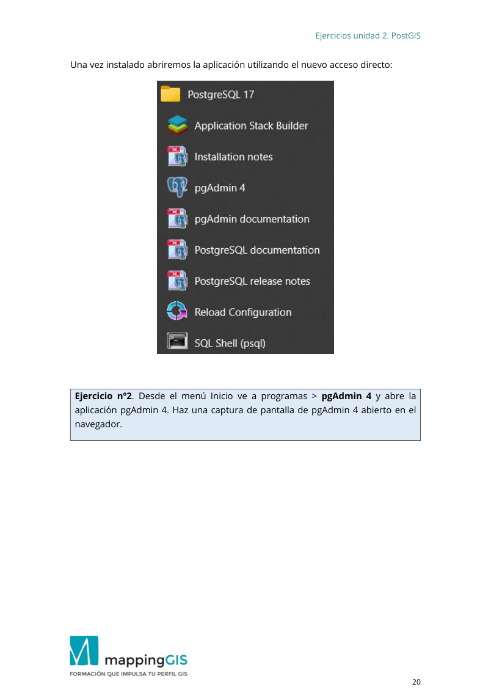
Ver las instrucciones originales · PDF, página 20
Ejercicio 3 · Conexión del cliente SIG a world
Enunciado original: Realiza una conexión desde un cliente SIG de escritorio a la base de datos world y pega el resultado en la plantilla de resultados.
Instrucciones y contexto del PDF original
Página 40 · texto original
Nos pide los datos para la conexión.
Nombre: establecemos un nombre que defina a la conexión. Podemos
poner el que queramos pero pondremos world para reconocer la conexión
a las capas del mundo.
Servicio: Lo dejaremos en blanco. El parámetro Servicio permite especificar
un archivo de conexión, que contiene los parámetros necesarios para
acceder a una determinada base de datos. Si empleásemos este archivo
podríamos omitir la entrada de puerto, usuario o contraseña, dejándolos en
blanco.
Anfitrión: el nombre del servidor.
Puerto: normalmente será 5432.
Base de datos: Nombre de la base de datos donde tenemos las capas que
queremos añadir a QGIS. En este caso world.
En el apartado Autenticación debemos ir a la pestaña Básica e introducir el
nombre de usuario y contraseña: en PostgreSQL por defecto serán postgres
/ postgres.
Los parámetros de conexión son:
Página 41 · texto original
Username postgres
Password postgres
Server Localhost
Port 5432
Database world
Una vez creada la conexión, solamente tenemos que hacer clic sobre el botón
Conectar y si hemos escrito bien los parámetros, debe realizarse la conexión.
Nos aparecerá el esquema public. Y al hacer clic sobre public veremos las bases de
datos con sus tablas.
Página 42 · texto original
Ver página 42 del PDF original, con sus capturas
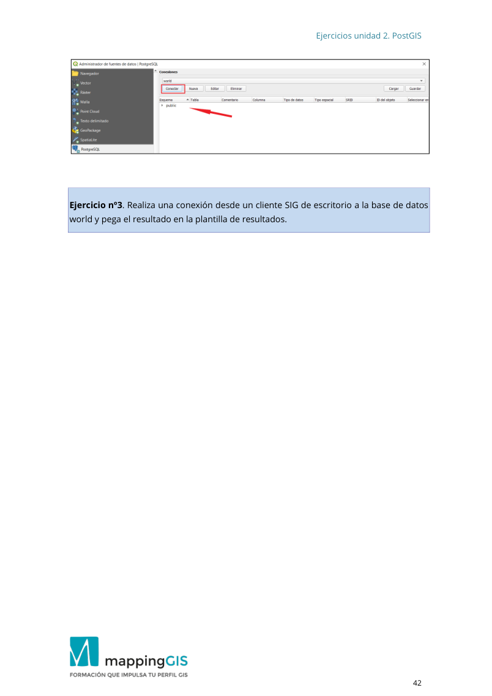
Ver las instrucciones originales · PDF, página 42
Ejercicio 4 · Captura de las tres tablas importadas
Enunciado original: Haz una captura de pantalla que muestre las 3 tablas creadas (dos de ellas con la interfaz gráfica y otra con el Administrador de bases de datos de QGIS)
Instrucciones y contexto del PDF original
Página 46 · texto original
Ahora que hemos creado las tablas en nuestra base de datos haz las siguientes
operaciones:
1. Si entras en pgAdmin 4, encontrarás la nueva tabla dentro de la base de
datos world > Schemas > public > Tables.
2. Para facilitar el trabajo con estas tablas vamos renombrar las tablas
ne_110m_admin_0_countries y ne_110m_populated_places a countries y cities,
respectivamente.
3. Para ello hacemos clic derecho sobre cada una de las tablas > Properties…
Página 47 · texto original
En la primera pestaña ( Properties), modificamos los nombres de los campos en el
apartado Name.
Clic en Save.
Página 48 · texto original
Realizamos la misma operación para la tabla ne_110m_populated_places
modificando el nombre a cities
Ejercicio nº 4. Haz una captura de pantalla que muestre las 3 tablas creadas (dos de
ellas con la interfaz gráfica y otra con el Administrador de bases de datos de QGIS)
Exportar tablas de PostGIS a archivos vectoriales con el
administrador de BBDD de QGIS
Desde el administrador de bases de datos de PostGIS también podemos exportar
las tablas, con la ventaja de que nos permite hacerlo en formatos como:
GeoPackage, Archivo Shape de ESRI, AutoCAD DXF, GeoJSON y muchos más.
Si has retomado el trabajo desde aquí puede que te pida ingresar las credenciales:
postgres/postgres
Cuando tengamos abierto el administrador de BBDD, seleccionamos PostGIS y la
base de Datos. A continuación, seleccionamos la tabla a exportar. Haz clic en cities
para seleccionar esta tabla.
Ver página 48 del PDF original, con sus capturas
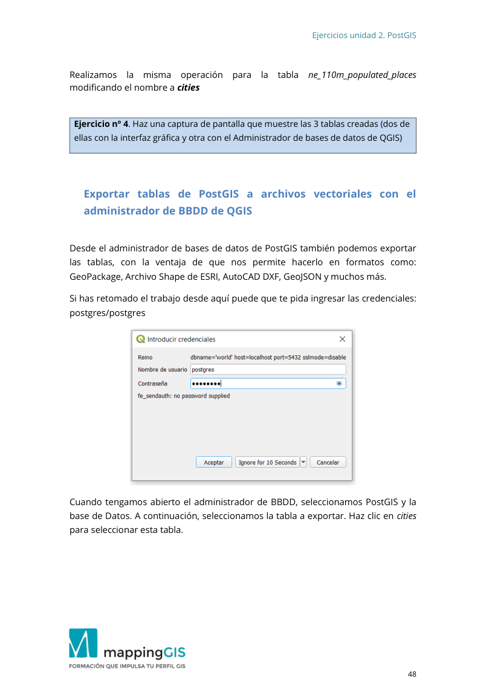
Ver las instrucciones originales · PDF, página 48
Ejercicio 5 · Archivos exportados a GeoJSON y GeoPackage
Enunciado original: Haz una captura de pantalla como la de arriba en que se vean los dos archivos exportados (uno en formato GeoJSON y el otro en formato GeoPackage) y pégala en la plantilla de resultados.
Instrucciones y contexto del PDF original
Página 49 · texto original
Cuando tengas la tabla seleccionada haz clic sobre el botón: Exportar a archivo
Se nos abre una ventana donde debemos escribir los datos para la exportación del
archivo.
Completamos el formulario:
Formato: nos permite elegir el formato de salida, Selecciona GeoJSON.
Guardar como: indica la ruta, puedes elegir el directorio Temp en C: o
cualquier otro si lo prefieres.
Opciones: nos permite elegir el SRID de Origen y de salida, así como la
codificación. Indicamos 4326 tanto para el SRID de entrada como para el de
salida. En Codificación: UTF-8.
QGIS nos ofrece un mensaje indicando que se ha exportado el archivo.
Página 50 · texto original
Ahora dispones de los datos de la tabla cities en un formato vectorial que puedes
utilizar en un mapa de Leaflet u Openlayers.
1. Vamos a la carpeta, y encontramos los archivos que hemos creado.
Ejercicio nº5. Haz una captura de pantalla como la de arriba en que se vean los dos
archivos exportados (uno en formato GeoJSON y el otro en formato GeoPackage) y
pégala en la plantilla de resultados.
Ver página 50 del PDF original, con sus capturas
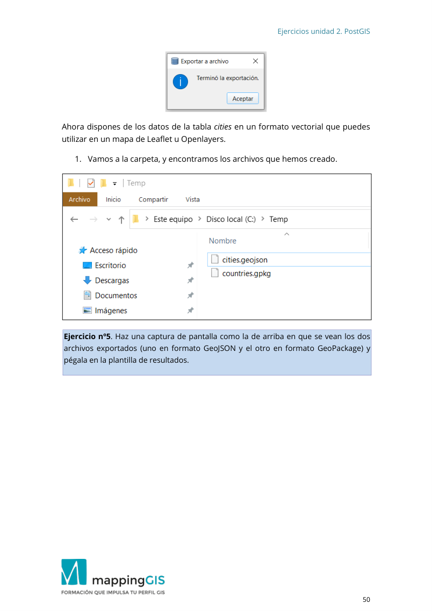
Ver las instrucciones originales · PDF, página 50
Ejercicio 6 · Registro de la tabla lugares en geometry_columns
Enunciado original: Haz una captura de pantalla en la que se vea el nuevo registro y pégala en la plantilla de resultados.
Instrucciones y contexto del PDF original
Página 56 · texto original
Creación de una tabla habilitada para operaciones espaciales
Un pequeño ejemplo nos muestra cómo dotar de capacidades espaciales a una
tabla recién creada en nuestra base de datos PostGIS utilizando la función
AddGeometryColumn.
1. Si no lo está ya, abre tu ventana de consultas:
2. Copia y pega el siguiente bloque en el Editor de consultas SQL.
CREATE TABLE "lugares"
(gid serial PRIMARY KEY,
"nombre" varchar(50),
"comentario" varchar(255),
"año" numeric,
geom geometry (Point, 4326)
);
3. Haz clic en el botón Ejecutar consulta para ejecutar los comandos.
La primera línea en el código CREATE TABLE..., crea una tabla con las columnas
especificadas y las claves. Estas son las acciones SQL sin componente espacial.
Fíjate en la última línea. Se crea el campo de geometría:
Se especifica el tipo de geometría "Point",
Y el identificador de referencia espacial "4326".
Si echamos un vistazo a los registros de la vista geometry_colums, podemos ver la
fila de la tabla lugares habilitada para operaciones espaciales.
Ejercicio nº 6. Haz una captura de pantalla en la que se vea el nuevo registro y pégala
en la plantilla de resultados.
A continuación, vamos a añadir algunas características a nuestra tabla lugares. Para
añadir datos mediante SQL, utilizamos los comandos:
Ver página 56 del PDF original, con sus capturas
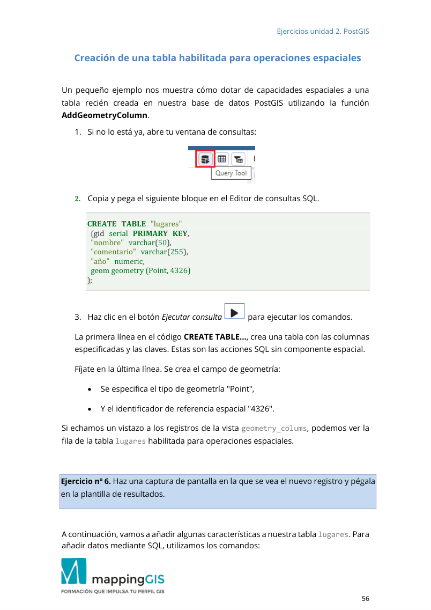
Ver las instrucciones originales · PDF, página 56
Ejercicio 7 · Nuevos registros y su información
Enunciado original: Haz una captura de pantalla en la que se vean los nuevos registros y su información y pégala en la plantilla de resultados.
Instrucciones y contexto del PDF original
Página 57 · texto original
“INSERT INTO table (columns) VALUES (value)”.
Table es el nombre de la tabla en la que queremos añadir datos;
Columns son los nombres de las columnas que queremos añadir a la tabla,
pueden ser todas las columnas o solo parte de ellas;
Values son los valores que queremos introducir en la tabla siguiendo el orden
de las columnas.
1. Si no lo está ya, abre tu ventana de consultas SQL pgAdmin.
2. Copia y pega el siguiente bloque en el Editor de consultas SQL.
INSERT INTO lugares (geom, nombre, comentario) VALUES
(ST_GeomFromText('POINT(-3.683352 40.400026)',4326), 'Madrid', 'Capital de
Espana');
INSERT INTO lugares (geom, nombre, comentario) VALUES
(ST_GeomFromText('POINT(-112.069992 33.53998)',4326), 'Phoenix', 'Ciudad
americana');
INSERT INTO lugares (geom, nombre, comentario) VALUES
(ST_GeomFromText('POINT (139.751407 35.685017)',4326), 'Tokyo', 'Capital de
Japon');
3. Haz clic en el botón Execute para ejecutar los comandos.
4. Echa un vistazo de nuevo a la tabla lugares. Botón derecho en
Tablas > Refresh…
5. Botón derecho en la tabla lugares > View/Edit Data> All Rows.
6. Desplázate hasta la pestaña geom y abre el visor de geometrías .
7. Haz clic sobre un elemento:
Página 58 · texto original
Ejercicio nº 7. Haz una captura de pantalla en la que se vean los nuevos registros y su
información y pégala en la plantilla de resultados.
Una vez añadidos los objetos geográficos borra las sentencias anteriores del editor
SQL.
Vamos a eliminar una de las filas. La sintaxis para borrar una fila es:
DELETE FROM lugares
WHERE gid= 3
Ejercicio nº 8. Ejecuta la consulta y haz una captura de pantalla con la fila eliminada. Pega
la captura en la plantilla de resultados.
A continuación, vuelve a añadirla con el comando INSERT INTO que hemos visto
anteriormente y los mismos datos.
Para cambiar el valor de una o varias columnas en una fila podemos utilizar el
comando:
“UPDATE table SET column = value WHERE id_column = id”.
Utilizamos el valor de ID para identificar la fila, ya que es el único valor que no se
puede repetir, es un identificador unívoco. Vamos a cambiar el valor del comentario
de la ciudad de Phoenix. Para ello abrimos la ventana de consultas SQL y escribimos:
UPDATE lugares
SET comentario = 'capital del estado de Arizona'
WHERE gid = 2
Ver página 58 del PDF original, con sus capturas
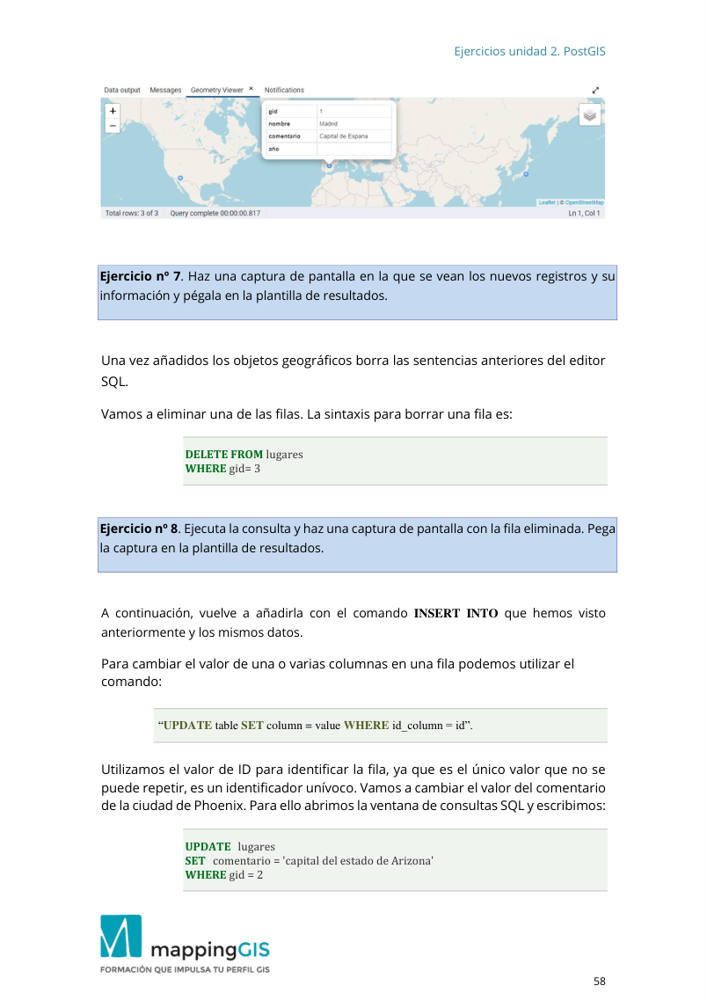
Ver las instrucciones originales · PDF, página 58
Ejercicio 8 · Eliminar una fila y capturar el resultado
Enunciado original: Ejecuta la consulta y haz una captura de pantalla con la fila eliminada. Pega la captura en la plantilla de resultados.
Instrucciones y contexto del PDF original
Página 58 · texto original
Ejercicio nº 7. Haz una captura de pantalla en la que se vean los nuevos registros y su
información y pégala en la plantilla de resultados.
Una vez añadidos los objetos geográficos borra las sentencias anteriores del editor
SQL.
Vamos a eliminar una de las filas. La sintaxis para borrar una fila es:
DELETE FROM lugares
WHERE gid= 3
Ejercicio nº 8. Ejecuta la consulta y haz una captura de pantalla con la fila eliminada. Pega
la captura en la plantilla de resultados.
A continuación, vuelve a añadirla con el comando INSERT INTO que hemos visto
anteriormente y los mismos datos.
Para cambiar el valor de una o varias columnas en una fila podemos utilizar el
comando:
“UPDATE table SET column = value WHERE id_column = id”.
Utilizamos el valor de ID para identificar la fila, ya que es el único valor que no se
puede repetir, es un identificador unívoco. Vamos a cambiar el valor del comentario
de la ciudad de Phoenix. Para ello abrimos la ventana de consultas SQL y escribimos:
UPDATE lugares
SET comentario = 'capital del estado de Arizona'
WHERE gid = 2
Ver página 58 del PDF original, con sus capturas
Ver las instrucciones originales · PDF, página 58
Ejercicio 9 · Actualizar el comentario y mostrar el resultado
Enunciado original: Ejecuta la consulta y pega el resultado en la plantilla de resultados.
Instrucciones y contexto del PDF original
Página 58 · texto original
Ejercicio nº 7. Haz una captura de pantalla en la que se vean los nuevos registros y su
información y pégala en la plantilla de resultados.
Una vez añadidos los objetos geográficos borra las sentencias anteriores del editor
SQL.
Vamos a eliminar una de las filas. La sintaxis para borrar una fila es:
DELETE FROM lugares
WHERE gid= 3
Ejercicio nº 8. Ejecuta la consulta y haz una captura de pantalla con la fila eliminada. Pega
la captura en la plantilla de resultados.
A continuación, vuelve a añadirla con el comando INSERT INTO que hemos visto
anteriormente y los mismos datos.
Para cambiar el valor de una o varias columnas en una fila podemos utilizar el
comando:
“UPDATE table SET column = value WHERE id_column = id”.
Utilizamos el valor de ID para identificar la fila, ya que es el único valor que no se
puede repetir, es un identificador unívoco. Vamos a cambiar el valor del comentario
de la ciudad de Phoenix. Para ello abrimos la ventana de consultas SQL y escribimos:
UPDATE lugares
SET comentario = 'capital del estado de Arizona'
WHERE gid = 2
Página 59 · texto original
Ver página 59 del PDF original, con sus capturas
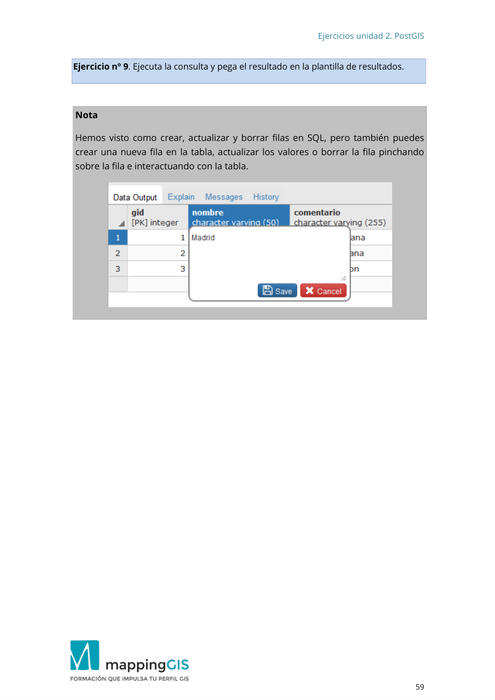
Ver las instrucciones originales · PDF, página 59
Ejercicio 10 · Nombre y población del país más poblado
Enunciado original: Realiza una consulta de tal modo que devuelva una única fila con el nombre y población del país con la población más alta y pega el resultado en la plantilla de resultados.
Instrucciones y contexto del PDF original
Página 65 · texto original
Para realizar los ejercicios de Consultas vamos a utilizar la tabla countries que
importamos anteriormente.
En primer lugar, vamos a seleccionar la población del país con mayor población.
Para ello tenemos que escribir un código SQL. Utilizamos el comando max, para
indicar el máximo valor, y la aplicamos a la columna pop_est (población) sobre la
tabla countries:
SELECT max (pop_est) FROM countries
Ejercicio nº 10. Realiza una consulta de tal modo que devuelva una única fila con el
nombre y población del país con la población más alta y pega el resultado en la plantilla
de resultados.
Pista:
Nombre y la población
De la capa de países,
Dónde la población sea igual
(a la máxima población de
la capa de países)
Para seleccionar los países con más de 200 millones de habitantes, tenemos que
seleccionar la columna name (nombre), e indicar que seleccione los registros en los
que el campo pop_est sea mayor a 200.000.000.
Ejercicio nº 11. Haz una captura de pantalla con el resultado y pégala en la plantilla de
resultados.
Para crear una lista ordenada utiliza el comando ORDER BY (ordenar por).
SELECT name
FROM countries
ORDER BY name
Funciones espaciales
Vamos a echar un vistazo a los diferentes tipos de funciones espaciales disponibles
en PostGIS.
Ver página 65 del PDF original, con sus capturas
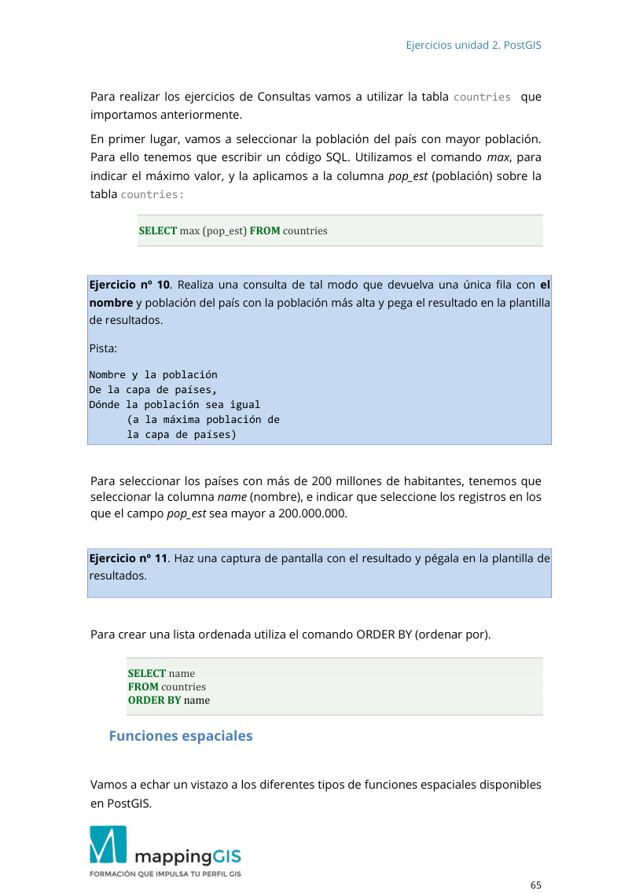
Ver las instrucciones originales · PDF, página 65
Ejercicio 11 · Países con más de 200 millones de habitantes
Enunciado original: Haz una captura de pantalla con el resultado y pégala en la plantilla de resultados.
Instrucciones y contexto del PDF original
Página 65 · texto original
Para realizar los ejercicios de Consultas vamos a utilizar la tabla countries que
importamos anteriormente.
En primer lugar, vamos a seleccionar la población del país con mayor población.
Para ello tenemos que escribir un código SQL. Utilizamos el comando max, para
indicar el máximo valor, y la aplicamos a la columna pop_est (población) sobre la
tabla countries:
SELECT max (pop_est) FROM countries
Ejercicio nº 10. Realiza una consulta de tal modo que devuelva una única fila con el
nombre y población del país con la población más alta y pega el resultado en la plantilla
de resultados.
Pista:
Nombre y la población
De la capa de países,
Dónde la población sea igual
(a la máxima población de
la capa de países)
Para seleccionar los países con más de 200 millones de habitantes, tenemos que
seleccionar la columna name (nombre), e indicar que seleccione los registros en los
que el campo pop_est sea mayor a 200.000.000.
Ejercicio nº 11. Haz una captura de pantalla con el resultado y pégala en la plantilla de
resultados.
Para crear una lista ordenada utiliza el comando ORDER BY (ordenar por).
SELECT name
FROM countries
ORDER BY name
Funciones espaciales
Vamos a echar un vistazo a los diferentes tipos de funciones espaciales disponibles
en PostGIS.
Ver página 65 del PDF original, con sus capturas
Ver las instrucciones originales · PDF, página 65
Ejercicio 12 · Coordenadas geométricas de Madrid
Enunciado original: Extrae las coordenadas geométricas de Madrid y pega el resultado obtenido en el Panel de salida en la plantilla de resultados.
Instrucciones y contexto del PDF original
Página 66 · texto original
Funciones de conversión
Las funciones de conversión permiten que los datos se conviertan entre geometrías
y formatos de datos externos
El siguiente ejemplo usa la función ST_AsText para descifrar la representación
binaria.
1. Seleccionamos la geometría en binario de nuestra tabla lugares:
SELECT geom FROM lugares;
Obtenemos como resultado:
0101000020E6100000E8AAF9FF0D7662C0EA1099E022355040
0101000020E6100000CFC2DFBFD7D965402330B95D63A044C0
0101000020E6100000D753F09FD2365AC043259A5810D24340
2. Utiliza la función ST_AsText () para hacer que el valor de la geometría sea un
poco más legible. Esta función nos devuelve el texto WKT (Well-Known Text):
SELECT ST_AsText(geom) FROM lugares;
Obtenemos como resultado:
"POINT(-3.683352 40.400026)"
"POINT(139.751407 35.685017)"
"POINT(-112.069992 33.53998)"
Ejercicio nº 1 2. Extrae las coordenadas geométricas de Madrid y p ega el resultado
obtenido en el Panel de salida en la plantilla de resultados.
Funciones de recuperación
Las funciones de recuperación nos muestran las medidas o propiedades de una
geometría.
Utiliza la función ST_Perimeter para determinar la longitud exterior de algunos
elementos de la tabla countries. Limita el resultado a 5 países.
Ver página 66 del PDF original, con sus capturas
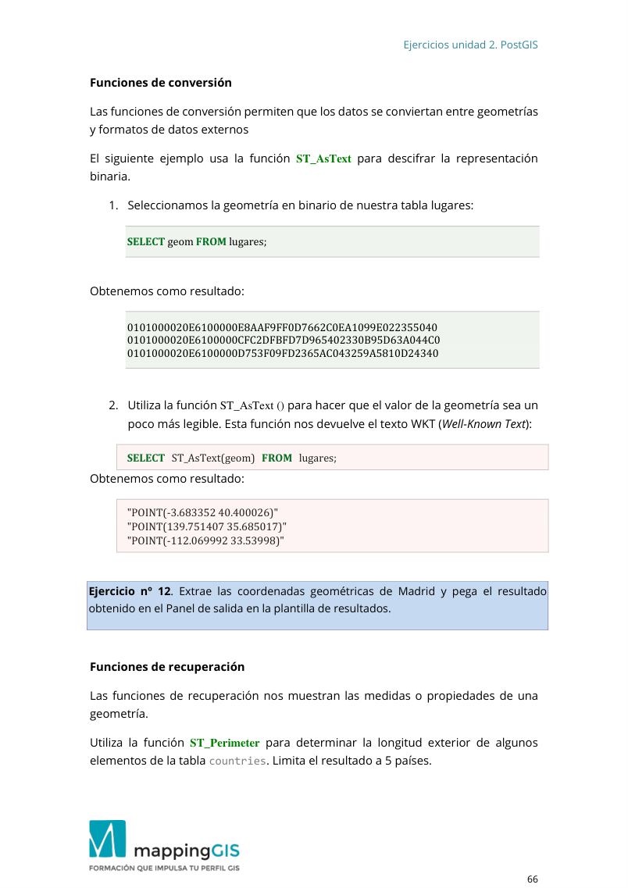
Ver las instrucciones originales · PDF, página 66
Ejercicio 13 · Perímetro de cinco países
Enunciado original: Crea la consulta y ejecútala. Pega el resultado obtenido en el Panel de salida en la plantilla de resultados.
Instrucciones y contexto del PDF original
Página 66 · texto original
Funciones de conversión
Las funciones de conversión permiten que los datos se conviertan entre geometrías
y formatos de datos externos
El siguiente ejemplo usa la función ST_AsText para descifrar la representación
binaria.
1. Seleccionamos la geometría en binario de nuestra tabla lugares:
SELECT geom FROM lugares;
Obtenemos como resultado:
0101000020E6100000E8AAF9FF0D7662C0EA1099E022355040
0101000020E6100000CFC2DFBFD7D965402330B95D63A044C0
0101000020E6100000D753F09FD2365AC043259A5810D24340
2. Utiliza la función ST_AsText () para hacer que el valor de la geometría sea un
poco más legible. Esta función nos devuelve el texto WKT (Well-Known Text):
SELECT ST_AsText(geom) FROM lugares;
Obtenemos como resultado:
"POINT(-3.683352 40.400026)"
"POINT(139.751407 35.685017)"
"POINT(-112.069992 33.53998)"
Ejercicio nº 1 2. Extrae las coordenadas geométricas de Madrid y p ega el resultado
obtenido en el Panel de salida en la plantilla de resultados.
Funciones de recuperación
Las funciones de recuperación nos muestran las medidas o propiedades de una
geometría.
Utiliza la función ST_Perimeter para determinar la longitud exterior de algunos
elementos de la tabla countries. Limita el resultado a 5 países.
Página 67 · texto original
Ejercicio nº 1 3. Crea la consulta y ejecútala. Pega el resultado obtenido en el Panel de
salida en la plantilla de resultados.
Funciones de comparación
Las funciones de comparación evalúan relaciones espaciales entre dos geometrías.
Utiliza la función ST_Distance para calcular la distancia que hay entre Phoenix y
Madrid.
La sintaxis será similar a esta (las coordenadas mostradas aquí no son correctas):
SELECT ST_Distance(
ST_GeomFromText('POINT(14.8 39.64)'),
ST_GeomFromText('POINT(73.91 40.17)')
);
ST_GeometryFromText devuelve el resultado en la unidad de la capa, (grados)
ST_GeographyFromText devuelve el resultado en metros.
Ejercicio nº 1 4. Pega el resultado obtenido de la distancia expresada en metros entre
Phoenix y Madrid. Estas ciudades están en la capa lugares.
Funciones de generación
Las funciones de generación crean geometrías a partir de otras.
Utilizaremos la función ST_Centroid para crear los puntos geométricos
correspondientes a la capa de países. Llamaremos a la capa nueva centroides.
Para crear los centroides , primero crearemos una tabla de tipo punto para
almacenar las geometrías.
CREATE TABLE centroides (
id serial primary key,
geom geometry (Point, 4326)
);
Ver página 67 del PDF original, con sus capturas
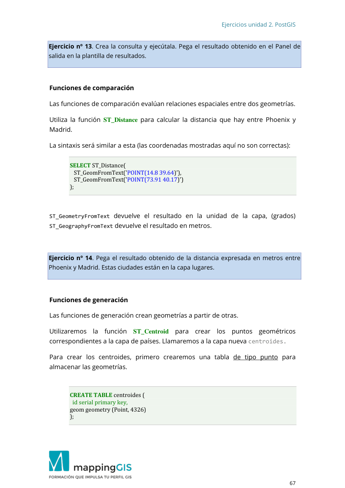
Ver las instrucciones originales · PDF, página 67
Ejercicio 14 · Distancia en metros entre Phoenix y Madrid
Enunciado original: Pega el resultado obtenido de la distancia expresada en metros entre Phoenix y Madrid. Estas ciudades están en la capa lugares.
Instrucciones y contexto del PDF original
Página 67 · texto original
Ejercicio nº 1 3. Crea la consulta y ejecútala. Pega el resultado obtenido en el Panel de
salida en la plantilla de resultados.
Funciones de comparación
Las funciones de comparación evalúan relaciones espaciales entre dos geometrías.
Utiliza la función ST_Distance para calcular la distancia que hay entre Phoenix y
Madrid.
La sintaxis será similar a esta (las coordenadas mostradas aquí no son correctas):
SELECT ST_Distance(
ST_GeomFromText('POINT(14.8 39.64)'),
ST_GeomFromText('POINT(73.91 40.17)')
);
ST_GeometryFromText devuelve el resultado en la unidad de la capa, (grados)
ST_GeographyFromText devuelve el resultado en metros.
Ejercicio nº 1 4. Pega el resultado obtenido de la distancia expresada en metros entre
Phoenix y Madrid. Estas ciudades están en la capa lugares.
Funciones de generación
Las funciones de generación crean geometrías a partir de otras.
Utilizaremos la función ST_Centroid para crear los puntos geométricos
correspondientes a la capa de países. Llamaremos a la capa nueva centroides.
Para crear los centroides , primero crearemos una tabla de tipo punto para
almacenar las geometrías.
CREATE TABLE centroides (
id serial primary key,
geom geometry (Point, 4326)
);
Ver página 67 del PDF original, con sus capturas
Ver las instrucciones originales · PDF, página 67
Ejercicio 15 · Países y centroides en un visor SIG
Enunciado original: Abre la nueva capa con un visor SIG, haz una captura de pantalla en la que se vean las capas de países y centroides.
Instrucciones y contexto del PDF original
Página 67 · texto original
Ejercicio nº 1 3. Crea la consulta y ejecútala. Pega el resultado obtenido en el Panel de
salida en la plantilla de resultados.
Funciones de comparación
Las funciones de comparación evalúan relaciones espaciales entre dos geometrías.
Utiliza la función ST_Distance para calcular la distancia que hay entre Phoenix y
Madrid.
La sintaxis será similar a esta (las coordenadas mostradas aquí no son correctas):
SELECT ST_Distance(
ST_GeomFromText('POINT(14.8 39.64)'),
ST_GeomFromText('POINT(73.91 40.17)')
);
ST_GeometryFromText devuelve el resultado en la unidad de la capa, (grados)
ST_GeographyFromText devuelve el resultado en metros.
Ejercicio nº 1 4. Pega el resultado obtenido de la distancia expresada en metros entre
Phoenix y Madrid. Estas ciudades están en la capa lugares.
Funciones de generación
Las funciones de generación crean geometrías a partir de otras.
Utilizaremos la función ST_Centroid para crear los puntos geométricos
correspondientes a la capa de países. Llamaremos a la capa nueva centroides.
Para crear los centroides , primero crearemos una tabla de tipo punto para
almacenar las geometrías.
CREATE TABLE centroides (
id serial primary key,
geom geometry (Point, 4326)
);
Página 68 · texto original
Después, insertaremos en nuestra tabla las nuevas geometrías generadas con la
función ST_Centroid:
INSERT INTO centroides (geom)
SELECT ST_Centroid(geom) FROM countries;
Si al ejecutar esta segunda sentencia aparece el error:
ERROR: Geometry SRID (0) does not match column SRID (4326)
Probablemente cuando se realizó la importación de la tabla countries no se definió
correctamente su SRID y se ha importado con el valor 0. Por lo tanto no es posible
insertar en la capa de centroides (con SRID 4326) una geometría con valor de SRID
diferente (0). Para solucionarlo tenemos dos opciones:
Opción 1. Eliminar la tabla de la base de datos y volver a importarla
introduciendo el código EPSG 4326.
Opción 2. Actualizar el SRID mediante una sente ncia SQL en el constructor
de consultas de pgAdmin:
SELECT UpdateGeometrySRID('countries','geom',4326);
Ejercicio nº 15. Abre la nueva capa con un visor SIG, haz una captura de pantalla en la que
se vean las capas de países y centroides.
Ahora debes crear un área de influencia (buffer) de 2 grados alrededor de nuestra
capa cities.
Ver página 68 del PDF original, con sus capturas
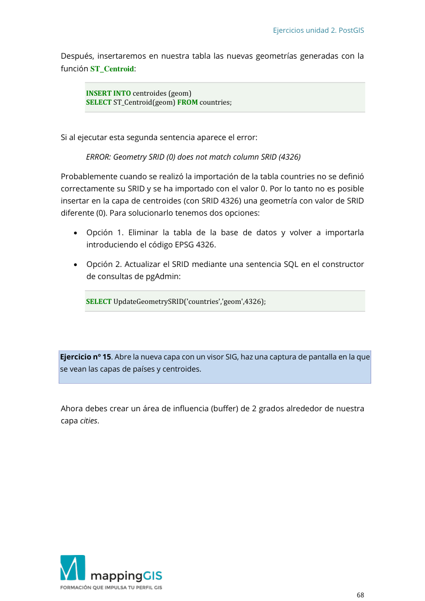
Ver las instrucciones originales · PDF, página 68
Ejercicio 16 · Buffer de 2 grados sobre cities
Enunciado original: Añade a la plantilla de resultados los pasos que has dado y comprueba el resultado en un cliente SIG, mostrando la capa cities y la del buffer.
Instrucciones y contexto del PDF original
Página 68 · texto original
Después, insertaremos en nuestra tabla las nuevas geometrías generadas con la
función ST_Centroid:
INSERT INTO centroides (geom)
SELECT ST_Centroid(geom) FROM countries;
Si al ejecutar esta segunda sentencia aparece el error:
ERROR: Geometry SRID (0) does not match column SRID (4326)
Probablemente cuando se realizó la importación de la tabla countries no se definió
correctamente su SRID y se ha importado con el valor 0. Por lo tanto no es posible
insertar en la capa de centroides (con SRID 4326) una geometría con valor de SRID
diferente (0). Para solucionarlo tenemos dos opciones:
Opción 1. Eliminar la tabla de la base de datos y volver a importarla
introduciendo el código EPSG 4326.
Opción 2. Actualizar el SRID mediante una sente ncia SQL en el constructor
de consultas de pgAdmin:
SELECT UpdateGeometrySRID('countries','geom',4326);
Ejercicio nº 15. Abre la nueva capa con un visor SIG, haz una captura de pantalla en la que
se vean las capas de países y centroides.
Ahora debes crear un área de influencia (buffer) de 2 grados alrededor de nuestra
capa cities.
Página 69 · texto original
Al igual que en el ejemplo anterior, para crear la zona de buffer, primero debemos
crear una tabla para almacenar las geometrías. Denomínala buffer.
¿De qué tipo debe ser esta tabla?
A continuación, inserta en la nueva tabla las nuevas geometrías generadas.
¿Qué función debes utilizar?
Ejercicio nº 16 . Añade a la plantilla de resultados los pasos que has dado y
comprueba el resultado en un cliente SIG, mostrando la capa cities y la del buffer.
¿En qué país se encuentra la ciudad de Sao Paulo?
Para responder a esta pregunta debes realizar una intersección utilizando la función
ST_Intersects (geometry A, geometry B) que devuelve verdadero si la geometría A
intersecta con la geometría B.
Deberás SELECT el nombre del país FROM la tabla de países WHERE ST_Intersects
(geometría de la tabla countries, coordenadas de Sao Paulo).
Ejercicio nº 17. Haz una captura de pantalla con la respuesta y las consultas utilizadas
para resolver la pregunta.
Ver página 69 del PDF original, con sus capturas
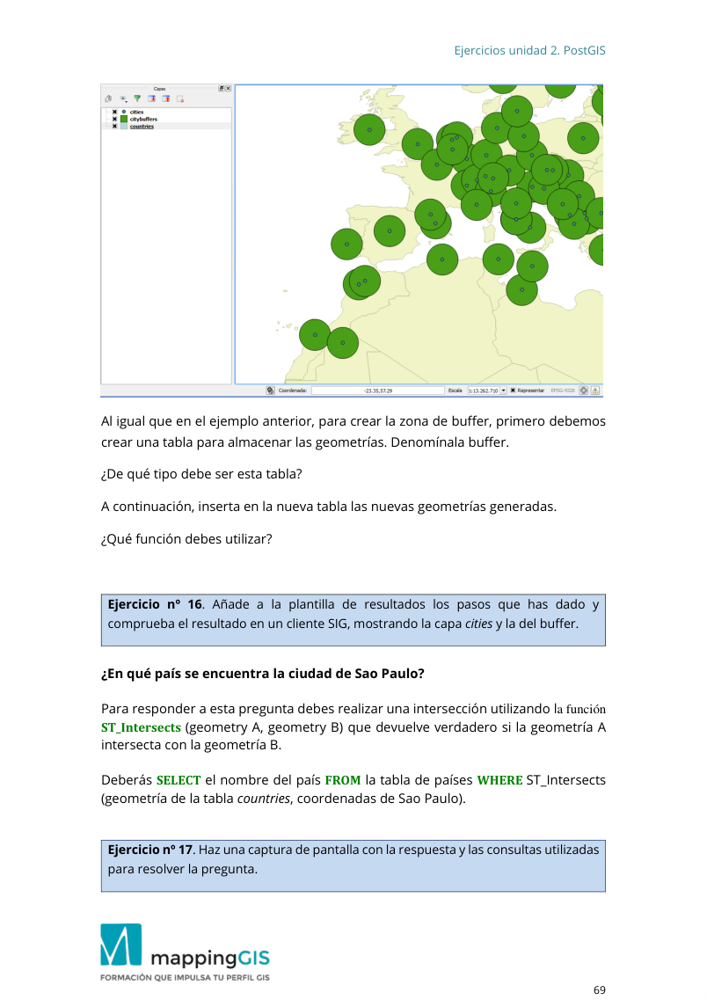
Ver las instrucciones originales · PDF, página 69
Ejercicio 17 · País en el que se encuentra Sao Paulo
Enunciado original: Haz una captura de pantalla con la respuesta y las consultas utilizadas para resolver la pregunta.
Instrucciones y contexto del PDF original
Página 69 · texto original
Al igual que en el ejemplo anterior, para crear la zona de buffer, primero debemos
crear una tabla para almacenar las geometrías. Denomínala buffer.
¿De qué tipo debe ser esta tabla?
A continuación, inserta en la nueva tabla las nuevas geometrías generadas.
¿Qué función debes utilizar?
Ejercicio nº 16 . Añade a la plantilla de resultados los pasos que has dado y
comprueba el resultado en un cliente SIG, mostrando la capa cities y la del buffer.
¿En qué país se encuentra la ciudad de Sao Paulo?
Para responder a esta pregunta debes realizar una intersección utilizando la función
ST_Intersects (geometry A, geometry B) que devuelve verdadero si la geometría A
intersecta con la geometría B.
Deberás SELECT el nombre del país FROM la tabla de países WHERE ST_Intersects
(geometría de la tabla countries, coordenadas de Sao Paulo).
Ejercicio nº 17. Haz una captura de pantalla con la respuesta y las consultas utilizadas
para resolver la pregunta.
Ver página 69 del PDF original, con sus capturas
Ver las instrucciones originales · PDF, página 69
Los resultados se incorporan a la plantilla indicada en la clase. No se han añadido preguntas, retos, soluciones ni autoevaluaciones nuevas.